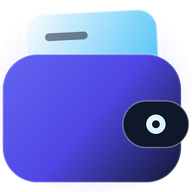

Anda sedang offline
Hubungkan ke internet untuk melanjutkan. Transaksi hanya dapat disimpan saat online.
Menunggu koneksi internet...

Hubungkan ke internet untuk melanjutkan. Transaksi hanya dapat disimpan saat online.